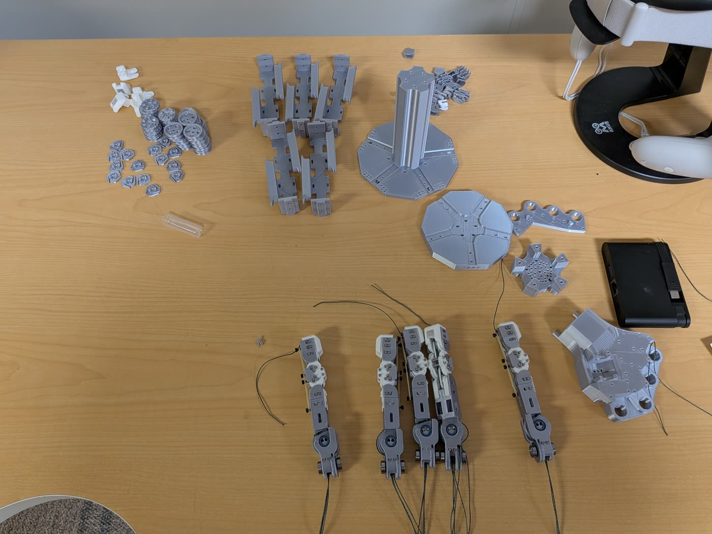
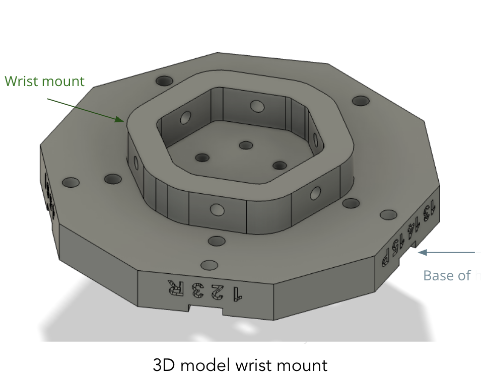
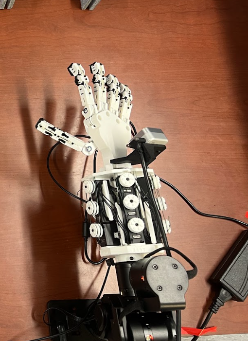

CRAFT Hand: A 3D-Printed Hand, Teleoperation and Zero-Shot Policy Transfer
This project explored whether the CRAFT hand, a five-fingered hybrid-rigid/compliant dexterous hand, could be turned from a hardware design into a usable research platform for teleoperation and policy learning. Aditya focused on building the physical hand, mounting it to the I2RT YAM Ultra arm, and teleoperating it with VR hand tracking. I focused on the simulation side: connecting HaMeR hand-pose predictions to simulated CRAFT controls, teleoperating the hand on an arm in Robosuite and DexJoCo, and testing whether policies trained for an Allegro hand could be mapped zero-shot to CRAFT.

Hardware baseline
CRAFT had printable parts and an intended hand design, but our lab setup needed a new wrist mount and practical teleoperation path.
Teleoperation baseline
HaMeR based teleoperation was tested for physical CRAFT hand. We enabled VR teleration for physical hand+arm setup and HaMeR-based teleoperation for simulated CRAFT hand on a robot arm.
Policy baseline
DexJoCo policies acted on Panda + Allegro actions. We tested how far those actions could be transferred to CRAFT.
Building Physical CRAFT Hand
The physical build used fully 3D-printed CRAFT fingers: white PLA for stable rigid geometry and black TPU for compliant joints. Aditya assembled the fingers, designed a custom wrist mount in Autodesk Fusion using the I2RT arm geometry, and mounted the hand to the I2RT YAM Ultra setup. This was different from the original X-Arm mounting target, so the wrist interface itself became part of the project.


VR-based Teleoperation on the Physical CRAFT Hand
We also tested Quest-based hand tracking for physical teleoperation. Open-TeleVision retargeted arm motion from wrist pose, and the hand pose was interpreted relative to the Quest headset to reduce tracking noise. A manual side-to-side calibration step was needed because thumb tracking was unreliable. This worked well enough for qualitative demos, but it remained clunky in practice: calibration was sensitive, the thumb was finicky, and the operator did not get useful contact feedback.
Fixing the CRAFT MuJoCo Model
On the simulation side, the first blocker was that the CRAFT MJCF did not behave like a clean position-controlled hand. The original model mixed degree-style actuator ranges with a simulator workflow that expected radian targets, and the position actuators were too weak or slow for responsive teleoperation. We created corrected XML variants and small inspection scripts so the hand could be loaded, swept through joint ranges, rendered, and embedded into larger robot scenes.
| Issue | What we changed | Why it mattered |
|---|---|---|
| Joint/actuator range mismatch | Created a corrected radian-based CRAFT MJCF and used compiled joint/control ranges consistently. | HaMeR and policy outputs could be mapped into real MuJoCo targets instead of degree-like commands. |
| Slow or weak finger motion | Tuned position feedback gains and stepped physics multiple times per control update. | Finger speed became visibly closer to the intended target motion, matching the professor's feedback after the presentation. |
HaMeR to CRAFT Teleoperation in MuJoCo
The CRAFT hand authors provided a teleoperation script with HaMeR for the physical CRAFT hand. For physical hand, the HaMeR's predicted parameters were inverted for the non-thumb and non-index fingers, and for all MCP sideways controls. For the simulated hand, we only inverted the Thumb PIP value from HaMeR's predictions. We also limited the MCP sideways ranges of CRAFT hand while mapping from HaMeR as the simulated CRAFT hand has wide MCP sideways range unlike human. We ran HaMeR live on detected right-hand boxes, extracted MANO wrist and finger poses, calibrated per-joint min/max ranges, and converted those values into 15 CRAFT commands.
Vision-based Arm + Hand Teleoperation in Robosuite and DexJoCo
Besides hand 3D pose prediction, HaMeR also estimates the camera parameters and 3D grasp orientation. We found that besides controling finger joints with HaMeR predictions, we can also control end-effector position and orientation with the predicted camera parameters and grasp orientation.
After the presentation, we moved beyond finger-only teleoperation. In robosuite, we added a CraftHand gripper wrapper that loads the CRAFT MJCF model and attaches it to a Panda arm through robosuite's gripper factory. We verified that the hand could be attached, actuated, viewed, and stepped through robosuite's action path. We also verified that 3D pose and camera parameters prediction from HaMeR could be used to control both the CRAFT hand and the pose of the robot arm end effector in Robosuite. However, Robosuite's gripper classes were designed for two-finger parallel-jaw grippers and that imposed some limitations for joint controls. For example, during teleoperation, the CRAFT hand fingers could not be curled to the fully closed position. So, we switched to DexJoCo for teleoperation in simulation.
DexJoCo created some simulation environment tasks for dexterous manipulation and the joint control for hands is more streamlined than Robosuite. We used HaMeR predicted values to control a Panda arm + CRAFT hand setup similar to Robosuite. This setup is described in next section. In DexJoCo, the existing single-arm action format was designed around Panda + Allegro:
[end-effector xyz, quaternion, 16 Allegro joint targets]. CRAFT does not match that interface: it has five fingers, 15 actuators, different thumb orientation, different joint couplings, and thinner fingers.
We therefore added two paths. For HaMeR teleoperation, CRAFT uses a direct 22-value action: [end-effector xyz, quaternion, 15 CRAFT targets]. For zero-shot policy tests, we kept a compatibility mapping from Allegro-shaped actions to CRAFT controls so trained DexJoCo policies could at least be evaluated without retraining.
Zero-Shot Allegro Policy Transfer to CRAFT
DexJoCo policies were trained with Allegro hand mounted on a Franka Panda arm to perform tasks such as hammering or pick-and-place. Replacing Allegro hand completely with CRAFT hand puts the fingers in a different initial position as the CRAFT's base is relatively large than Allegro's. So, we chose to attach only CRAFT fingers to Allegro base to create a hybrid hand setup. We mapped the policy's Allegro action outputs into CRAFT controls. For the mapping, we incorporated these design decisions:
- Finger count mismatch: The Allegro hand has 4 finger. As CRAFT hand has 5 fingers, during mapping, we made the pinky finger of CRAFT hand mimic the ring finger.
- Joint control mismatch: Allegro hand has 4 joint controls for each finger, but CRAFT has three. So, we disregarded the distal joint control for allegro hand and mapped the medial joint control to CRAFT coupled joints. Also, the Allegro hand fingers rotate around the principal axis, while the CRAFT hand fingers move sideways. So, we mapped the effect of the finger rotation of Allegro's hand to a small sideways movement to CRAFT hand fingers.
- Thumb orientation mismatch: The Allegro hand thumb is oriented differently than CRAFT's. The Allegro thumb is longer than the CRAFT thumb and creates direct opposition with the other fingers. As CRAFT hand has a different thumb orientation, we changed the CRAFT thumb orientation and rotation axis to match the Allegro hand.
Our finding was that the mapping for CRAFT hand works sometimes, but has lower success rate than the original Allegro hand. We observed that CRAFT's uneven inner fingers reduced contact surface, the mapped thumb often failed to create a tight grip to lift objects, and the curl with the coupled medial-distal joints did not match what the Allegro-trained policy expected. These failures are good evidence that CRAFT likely needs either CRAFT-specific demonstrations, retargeted physically plausible data, or policy fine-tuning in the CRAFT simulator rather than a purely geometric action remap.
What Worked, What Did Not
| Result | Status | What we learned |
|---|---|---|
| Physical CRAFT hand build and I2RT mount | Working | The hand can be physically assembled and mounted on a robot arm with an appropriate mount. |
| VR-based teleoperation for physical CRAFT hand | Worked qualitatively | Combining hand tracking from Meta Quest and arm motion retargeting with Open Television works well in practice for the physical CRAFT hand. |
| Arm + CRAFT teleoperation in sim | Partially worked | Camera-based tracking can produce arm+hand motion, but tracking loss, lack of contact feedback, and field-of-view limits remain major issues. |
| Zero-shot Allegro-to-CRAFT policy transfer | Low success rate | Action remapping alone cannot hide the kinematic and contact differences between Allegro and CRAFT. |
Next Steps
The project suggests that the CRAFT hand can be effectively controlled via vision-based teleoperation to collect demonstration data in both real-world and simulated environments. However, the limitations we observed indicate that further improvements in teleoperation quality and data collection are needed before training effective policies. We hypothesize that contact-aware feedback or depth sensing may improve teleoperation data quality. We also found that zero-shot policy transfer from a different hand design is not sufficient for reliable performance, suggesting that CRAFT-specific data or fine-tuning will be necessary for successful policy learning.
In short, our project turned CRAFT into a working experimental target rather than just a hand design. The resulting system is still rough, but it now has the pieces needed for the next research question: what challenging tasks can be accomplished by a policy for the five-finger compliant hand in simulation and real world?
References
- CRAFT hand: https://craft-hand.github.io/
- HaMeR: https://geopavlakos.github.io/hamer/
- Robosuite: https://robosuite.ai/
- DexJoCo: https://dexjoco.github.io/